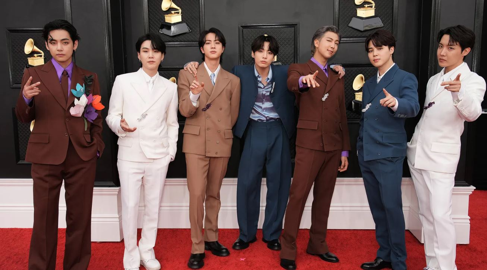
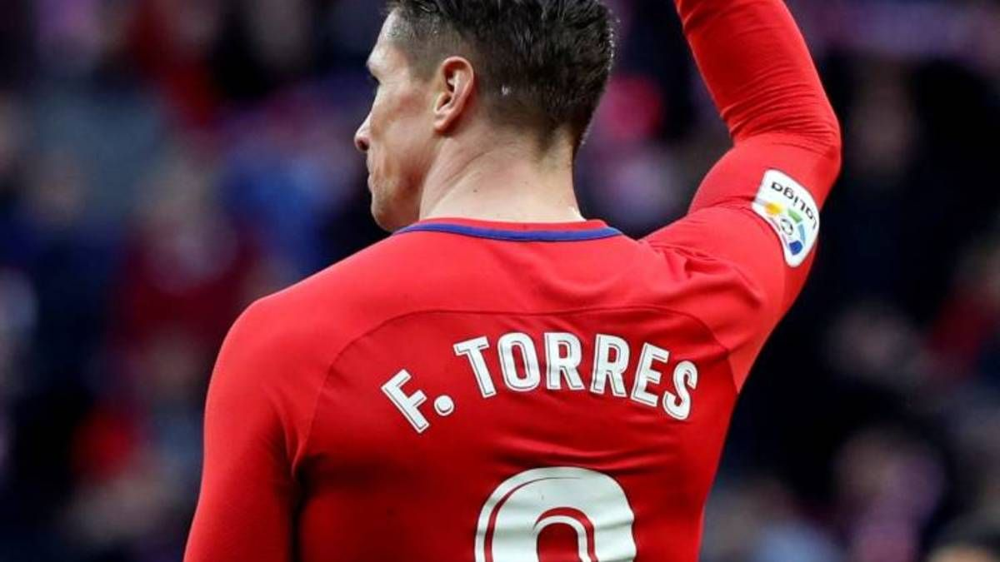

PREMIOS GRAMMY 2022
Este domingo se llevó adelante la 64ª entrega de los Premios Grammy a lo mejor de la música con la conducción del comediante y actor Trevor Noah. La ceremonia creada por la Academia Nacional de Artes y Ciencias de la Grabación se realizó en la MGM Gran Arena de Las Vegas, Nevada y se transmitió a través de la cadena CBS en Estados Unidos, en TNT para en Latinoamérica, en la plataforma de streaming Paramount+ y en el canal de YouTube y la página web oficial de la organización.
Entre otras grandes figuras de la talla de Billie Eilish, Brandi Carlile, Lil Nas X, Jack Harlow, BTS, Olivia Rodrigo, Leslie Odom Jr., Rachel Zegler, Jon Batiste, Carrie Underwood, H.E.R., Ben Platt, Silk Sonic, el dúo integrado por Bruno Mars y Anderson Paak, John Legend y Cynthia Erivo, este año dijeron presente sobre el escenario dos artistas latinoamericanos: el colombiano J Balvin y la argentina María Becerra. Y hubo un homenajeen memoria de Taylor Hawkins, el baterista de Foo Fighters recientemente fallecido.

FERNANDO TORRES
Fernando José Torres Sanz (Fuenlabrada, Madrid, 20 de marzo de 1984), también conocido como El Niño Torres, es un exfutbolista español que jugaba como delantero. Es considerado una leyenda en el Atlético de Madrid y la selección de fútbol de España. En la actualidad es entrenador de las secciones formativas del Atlético de Madrid.
Formado como futbolista desde categoría alevín en la cantera del Atlético de Madrid, debutó con el primer equipo rojiblanco en 2001 con 17 años, consiguiendo el ascenso la siguiente temporada a Primera División.Tras siete temporadas en las que fue capitán y referente del club rojiblanco, fue traspasado en 2007 al Liverpool por 36 m€.Disputó tres temporadas y media con el club de Anfield, siendo el máximo goleador del equipo en dos de ellas y conformando bajo la dirección de Rafa Benítez, el conocido como «Spanish Liverpool».En esta etapa alcanzó su cenit futbolístico a nivel individual, siendo incluido en el once ideal de FIFA (2008 y 2009), y resultando tercero en las votaciones a mejor jugador mundial de FIFA y del Balón de Oro en 2008.
